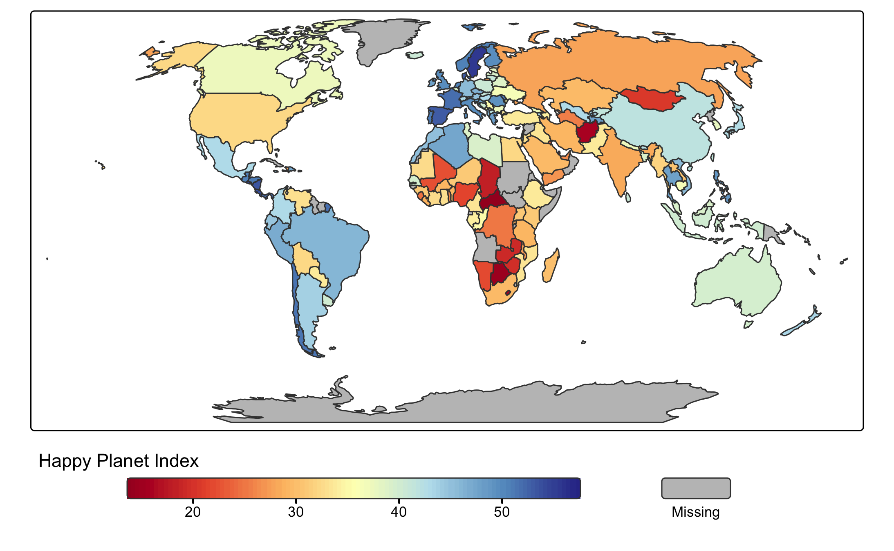

tmap is an R package for drawing thematic maps. The API is based on A Layered Grammar of Graphics and resembles the syntax of ggplot2, a popular R-library for drawing charts.
Installation
Installation of tmap (version 4) is straightforward:
install.packages("tmap")The old version of tmap (version 3) is available in the CRAN archive, but we recommend moving to the new version 4.
Development version
The development version can be installed from the GitHub repository using remotes and pak packages or from the R-universe repository.
# install.packages("remotes")
remotes::install_github("r-tmap/tmap")
# install.packages("pak")
pak::pak("r-tmap/tmap")
# Or from r-universe
install.packages("tmap", repos = c("https://r-tmap.r-universe.dev", "https://cloud.r-project.org"))For Linux and macOS users who are new to working with spatial data in R, this may fail since additional (non-R) libraries are required (which are automatically installed for Windows users).
Windows No additional installation required.
Linux (Ubuntu) See https://geocompx.org/post/2020/installing-r-spatial-packages-linux/. Please address installation issues in this issue.
macOS See https://www.kyngchaos.com/. Please address installation issues in this issue.
Getting started
Plot a World map of the happy planet index (HPI) per country. The object World is an example spatial data (sf) object that is contained in tmap:
tm_shape(World) +
tm_polygons(fill = "HPI")This map can be enhanced in several ways. For instance:
tm_shape(World, crs = "+proj=robin") +
tm_polygons(fill = "HPI",
fill.scale = tm_scale_continuous(values = "matplotlib.rd_yl_bu"),
fill.legend = tm_legend(title = "Happy Planet Index",
orientation = "landscape",
frame = FALSE)
)
Additional Resources for Learning tmap
For more in-depth learning on the tmap package, refer to the following resources:
-
Book Chapter: Geocomputation with R includes a chapter on Making Maps with R, which covers tmap.
-
Official Vignettes: A collection of vignettes at r-tmap.github.io covers both basic and advanced topics with examples.
- Work-in-Progress Book: Elegant and Informative Maps with tmap is an upcoming book available at tmap.geocompx.org.
These resources provide a solid foundation for working with tmap in R.